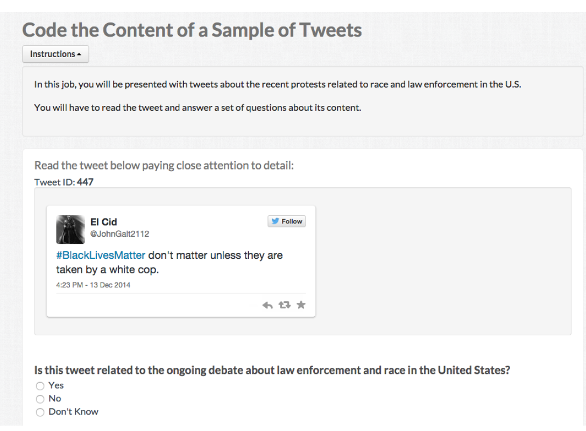
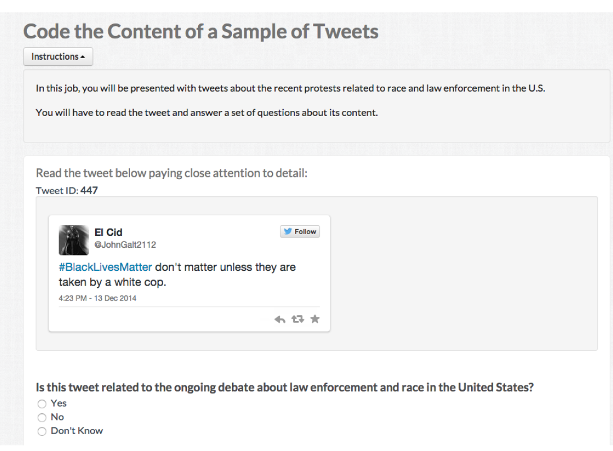

Week 5: Supervised Learning:
Training your own classifiers
Today is your deadline for the problem set 1.
Replications next week
We started from pre-processing text as data, representing text as numbers, and describing features of the text.
Last week, we started learning how to measure concepts in text:
Documents pertaining to certain classes and how we can use statistical assumptions to measure these classes
Unsupervised Models: learning (hidden or latent) structure in unlabeled data.
Supervised Models: learning relationship between inputs and a labeled set of outputs.
Step 1: label some examples of the concept of we want to measure
Step 2: train a statistical model on these set of label data using the document-feature matrix as input
Step 3: use the classifier - some f(x) - to predict unseen documents.
Step 4: use the measure + metadata|exogenous shocks to learn something new about the world.
Dictionary methods:
Supervised learning:
Step 1: label some examples of the concept of we want to measure
Step 2 train a statistical model on these set of label data using the document-feature matrix as input
Step 3: use the classifier - some f(x) - to predict unseen documents.
Step 4: use the measure + metadata|exogenous shocks to learn something new about the world.
External Source of Annotation: someone else labelled the data for you
Expert annotation: put experts in quotation
Crowd-sourced coding: digital labor markets
Crowdsourcing is now understood to mean using the Internet to distribute a large package of small tasks to a large number of anonymous workers, located around the world and offered small financial rewards per task. The method is widely used for data-processing tasks such as image classification, video annotation, data entry, optical character recognition, translation, recommendation, and proofreading
Expert annotation is expensive.
Benoit, Conway, Lauderdale, Laver and Mikhaylov (2016) note that classification jobs could be given to a large number of relatively cheap online workers
Multiple workers ~ similar task ~ same stimuli ~ wisdom of crowds!
Representativeness of a broader population doesn’t matter ~ not a populational quantity, it is just a measurement task
Their task: Manifestos ~ sentences ~ workers:
Reduce uncertainty by having more workers for each sentence

Step 1: label some examples of the concept of we want to measure
Step 2 train a statistical model on these set of label data using the document-feature matrix as input
Step 3: use the classifier - some f(x) - to predict unseen documents.
Step 4: use the measure + metadata|exogenous shocks to learn something new about the world.
Once we have our training data, we need to pick a classifier. We face these challenges:
in text as data, often your DFM has Features > Documents
Bias-Variance Trade-off
Many models:
The simplest, but highly effective, way to avoid overfit and improve out-sample accuracy is to add penalty parameters for statistical models:
OLS Loss Function :
\[ RSS = \sum_{i=1}^{N} \left( y_i - \beta_0 - \sum_{j=1}^{J} \beta_j x_{ij} \right)^2 \]
OLS + Penalty:
\[ \text{RSS} = \sum_{i=1}^{N} \left( y_i - \beta_0 - \sum_{j=1}^{J} \beta_j x_{ij} \right)^2 + \lambda \sum_{j=1}^{J} \beta_j^2 \rightarrow \text{ridge regression} \]
\[ \text{RSS} = \sum_{i=1}^{N} \left( y_i - \beta_0 - \sum_{j=1}^{J} \beta_j x_{ij} \right)^2 + \lambda \sum_{j=1}^{J} |\beta_j| \rightarrow \text{lasso regression} \]
Step 1: label some examples of the concept of we want to measure
Step 2 train a statistical model on these set of label data using the document-feature matrix as input
Step 3: use the classifier - some f(x) - to predict unseen documents.
Step 4: use the measure + metadata|exogenous shocks to learn something new about the world.
| Predicted | ||||
|---|---|---|---|---|
| J | ¬J | Total | ||
| Actual | J | a (TP) | b (FN) | a+b |
| ¬J | c (FP) | d (TN) | c+d | |
| Total | a+c | b+d | N |
Accuracy: number correctly classified/total number of cases = (a+d)/(a+b+c+d)
Precision : number of TP / (number of TP+number of FP) = a/(a+c) .
Recall: (number of TP) / (number of TP + number of FN) = a /(a+b)
F : 2 precision*recall / precision+recall
Task: Tone of New York Times coverage of the economy. Discusses:
Text-as-Data